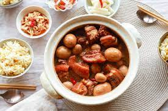

Thit Kho

Description
"Thit Kho" is a vietnamese dish that involves carmelized pork belly. This dish is very
popular in Vietnamese households for everyday eating but is also traditionally served
during Tet, the Vietnamese Lunar New Year. The longer you cook the pork belly, the
more tender it becomes.
Ingredients
- 2 pounds pork belly, trimmed
- 2 tablespoons white sugar
- 5 shallots, sliced
- 3 cloves garlic, chopped
- 3 tablespoons fish sauce
- ground black pepper to taste
- 13 fluid ounces coconut water
- 6 hard-boiled eggs, peeled
Steps
- Slice the pork belly into 1-inch pieces layered with skin, fat, and meat
- Heat sugar in a large wok or pot over medium heat until it melts and
carmelizes into a light brown syrup, about 5 minutes. Add pork and increase
heat to high. Cook and stir to render some of the pork fat, 3 to 5 minutes.
- Stir shallots and garlic into the wok. Add fish sauce and black pepper; stir
to evenly coat pork. Pour in coconut water and bring to a boil. Add eggs,
reduce heat to low, and simmer, covered, until pork is tender, about 1 hour.
- Remove wok from the heat and let stand, about 10 minutes. Skim the fat from
the surface of the dish